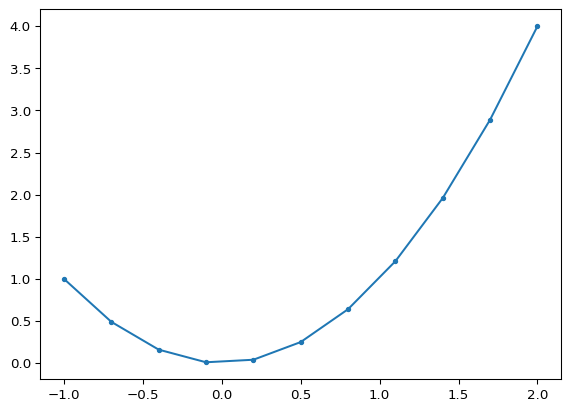
9 Plotting graphs with Matplotlib
Plotting a function is often done by approximating the function by piece-wise straight lines. For this we divide the interval that we want to plot in small pieces and generate (x, y)-coordinates. Suppose we want to plot the function \(y=x^2\) over interval \(x \in [A, B]\), then first we would create the x-coordinates: \[ x_i = A + i \cdot \frac{B-A}{N} = A + i \cdot\delta x \quad \text{with } i \in \{0, 1, .. , N\} \] with \(\delta x = (B-A)/N\) the distance between the x-coordinates.
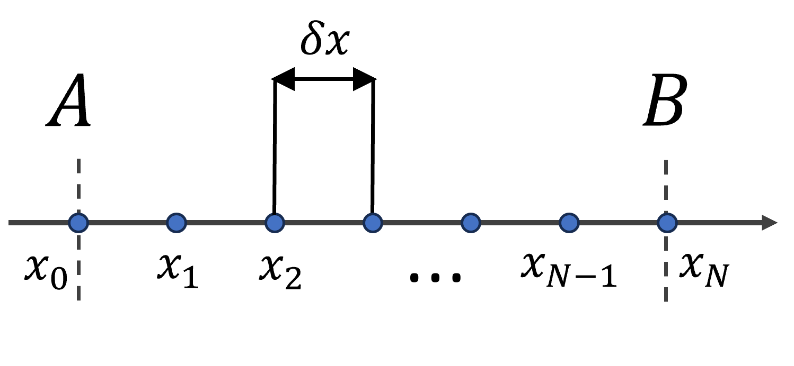
Afterwards we calculate the y-coordinates from the x-coordinates: \(y_i = x_i^2\). Now that we have both coordinates we can plot the points with a line plot, which will connect the points with line pieces. The following code plots the curve \(y = x^2\) within interval \([-1, 2]\)
Within this example we used a low number of points, \(N = 10\), which is too small to obtain a smooth realistic curve. Normally we plot curves with \(N = 100\) or larger. I added dots on the curve (provided by the option marker='.' in the plot command) to indicate where the points are.
Different ways to generate the x-values
To create the \(N+1\) coordinates \(x_i\) in interval \([A, B]\) there are various methods available. First I will list the methods not using the Numpy package:
Using a
whileloop (not optimal when you know the number of divisions):Using a
forloop and arange:Using list comprehension:
Different ways to generate the x-values: with Numpy
Numpy is designed for numerical computations so it has built-in functions for the generation of coordinates within intervals ( see also https://numpy.org/doc/stable/user/how-to-partition.html#how-to-partition). Numpy functions arange() and linspace() create regularly spaced coordinates within 1D intervals:
x1 = [-1. -0.75 -0.5 -0.25 0. 0.25 0.5 0.75 1. 1.25 1.5 1.75]
x2 = [-1. -0.7 -0.4 -0.1 0.2 0.5 0.8 1.1 1.4 1.7 2. ]The created coordinates are in Numpy arrays (not lists). Numpy arrays are much faster to access than lists. But lists can change their size easily and contain mixed object types.
Numpy also provides operations and functions on Numpy arrays. We can use this to generate for example the y-coordinates:
y = [1. 0.562 0.25 0.062 0. 0.062 0.25 0.562 1. 1.562 2.25 3.062]
z = [-2. -0.75 0.5 1.75 3. 4.25 5.5 6.75 8. 9.25 10.5 11.75]When to use which method ?
It seems that Numpy is much easier for creating regularly spaced points within an interval, especially when using the values afterwards within a calculation, so why would we use anything else? There are some details to it though, I tried to summarize the PRO’s and CON’s in the following table:
| type | PRO’s | CON’s | Use-case |
|---|---|---|---|
| while loop | versatile, only option when number of iterations is unknown | cumbersome | Unknown number of iterations |
| for loop | Lower memory footprint if used with range(), lazy evaluation |
Cumbersome | large number of iterations, performing a direct action each iteration |
| list comprehension | Clear, easy | Less convenient than Numpy arange() |
When using Numpy is not desired/possible |
| Numpy arange | Easiest method for fixed step, Numpy provides array operations and functions | End of interval is exclusive, no lazy evaluation, slower than Python built-in Array |
Regularly spaced intervals (fixed step) for computational purposes |
| Numpy linspace | Easiest method for fixed number of points, Numpy provides array operations and functions | No lazy evaluation, slower than Python built-in Array |
Regularly spaced interval (fixed number of points) for computational purposes |
Basically, if you need to create a regularly spaced interval:
- Use a
whileloop when you don’t know the number of iterations up front. - Use a
forloop for huge number of iterations which cannot fit into memory, so that the lazy evaluation ofrangecan help you there. In this case you would not create the actual list, but take an action at each iteration (e.g. save the result to a file). - Use list comprehension if you don’t want to use Numpy (or it is not available)
- Use Numpy’s
arangeorlinspacefor numerical computations and plotting.
Note that this comparison is specifically for regularly spaced intervals. When iterating over lists of objects, using a for loop or list comprehension is more appropriate.
Before you start:
At the beginning of the script you should first import the required libraries (numpy and matplotlib):
# Import numpy and matplotlib
import numpy as np
import matplotlib.pyplot as plt9.1 Plot a Gaussian and Lorentz distribution (Spring 2025)
Plot the Gaussian and the Lorentz function on one plot to compare them, add a legend and compute the curve of the difference between the two. The Gaussian curve is defined by:
\[ g(x; \mu, \sigma) = \frac{1}{\sqrt{2\pi}\sigma} e^{- (x-\mu)^2 / 2\sigma^2} \]
The Lorentz curve is given by:
\[ f(x; x_0, \gamma) = \frac{1}{\pi} \frac{\gamma}{(x-x_0)^2 + \gamma^2} \]
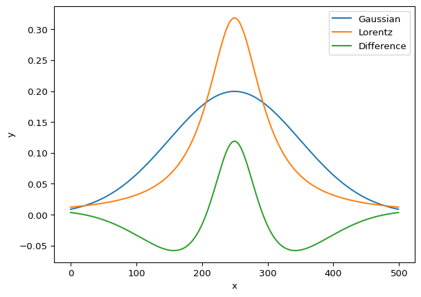
9.2 Lissajoux figures (Spring 2024)
Lissajoux figures: sinusoidal signals in x and y.
\[ \begin{aligned} x &= \sin(f_x t + \delta \phi)\\ y &= \sin(f_y t) \end{aligned} \]
- Traversed coordinates in time
tform shapes - Signal frequencies
fxandfy - Phase difference
dphi
Lissajoux figures are typically encountered on an oscilloscope (see the figure below). In an oscilloscope electric signals are connected to the vertical and horizontal
# Use following parameters
fx = 3; fy = fx - 1; dphi = pi/2 # or dphi = pi/4
# Hint: Use np.linspace(), np.pi, np.sin()
# take time in interval [0, 2*pi], e.g.:
# t = np.linspace(0, 2*np.pi, 1000)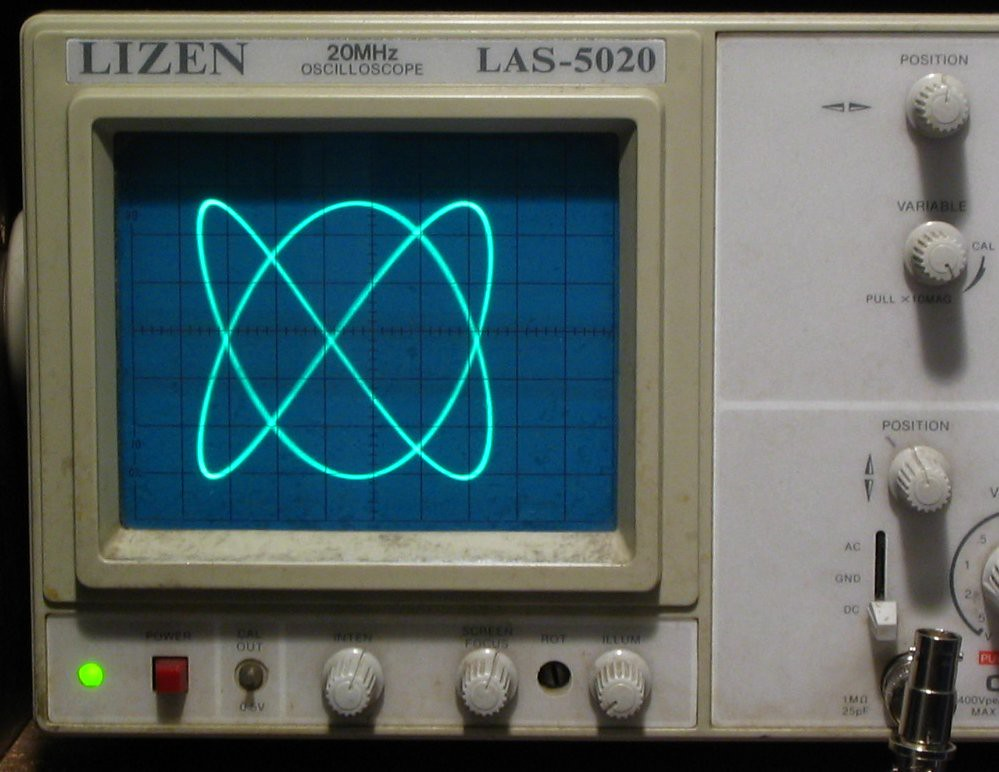
Output plot example
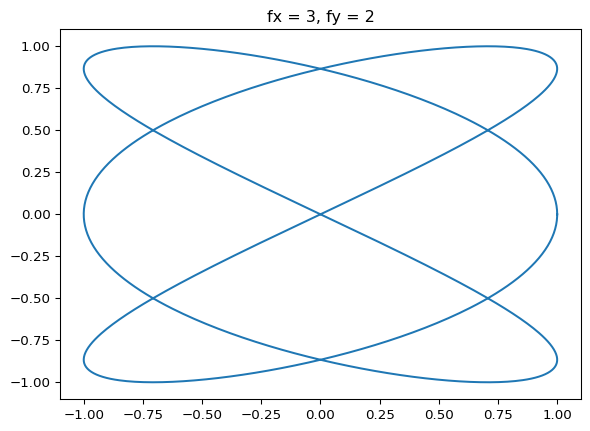
9.3 Refraction at a glass interface (Spring 2024)
Plot the refracted angle \(\theta_2\) (using Snell’s law) of a ray of light incident at a glass medium, as function of the incoming angle: use the incoming angle \(\theta_1 \in [-90, 90]\) degrees medium 1 has \(n_1 = 1\), medium 2 has \(n_2 = 1.55\).
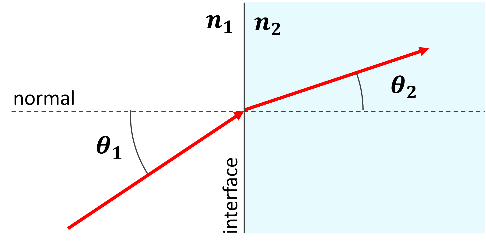
Snell’s law is given by: \[ n_1 \sin(\theta_1) = n_2 \sin(\theta_2) \] If refraction indices \(n_1\) and \(n_2\) are known, the refracted angle can be calculated as follows: \[ \theta_2 = \arcsin \left( \frac{n_2}{n_1} \sin(\theta_2) \right) \] Hint: Use Numpy arrays for the angles (np.linspace()), and Numpy functions: np.sin(), np.arcsin() (convert to radians by multiplying by a factor pi/180) or use the functions np.rad2deg and np.deg2rad to convert between the two.
The output of your code should be similar to following plot:
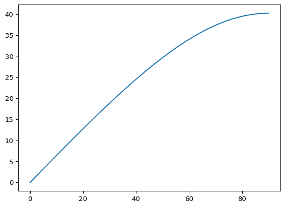
9.4 Adapt previous plot to include axis labels, etc. (Spring 2024)
- Add labels to your axes using the
set_xlabelandset_ylabelmethods. Put $-symbols around mathematical/Greek letters and double-escaped Greek letters such as theta (the escape symbol is “\”). For example:
ax.set_xlabel("$\\theta_1$ (in degrees)")- Add a title to your plot (e.g. “Refraction angles”) by using the method:
ax.set_title() - Set the intervals to be plotted between 0 and 90 degrees, and set the aspect ratio of the axes equal to one:
ax.set_xlim([0, 90])
ax.set_ylim([0, 90])
ax.set_aspect('equal', 'box')- Save the figure using fig.savefig() as a png figure, for example:
fig.savefig("./ex2_figure.png")The output should give you a similar plot to the one below:
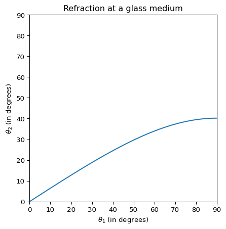
9.5 Extend previous script to show multiple incident angles (Spring 2024)
Plot the previous plot but now with multiple values for \(n_2 \in [1, 1.8]\)
- use the arange function of Numpy to create values for \(n_2\) within the interval, for example each value separated by \(\delta n = 0.1\)
n2s = np.arange(1, 1.85, 0.1)- Plot in the same axis when looping over the values (but initialize the
fig, axonly once before the loop) - add a legend using
plt.legend(n2s) - to remove the extra decimals due to rounding errors, use
plt.legend(np.round(n2s, decimals=2))to round the numbers before showing the legend.
The output should give the below plot:
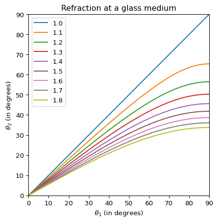
9.6 Plot ellipses with various parameters (Spring 2024)
Plot ellipses as parametric plots with parameter \(t \in [0, 2*\pi]\) and where the (x, y)-curve is given by: \[ \begin{aligned} x &= a \cos(t)\\ y &= b \sin(t) \end{aligned} \] Plot multiple ellipses with different values of \(a\) and \(b\):
- take parameter \(a \in [1, 2]\) and choose a small (e.g. 8) curves using
np.linspace(), afterwards calculate corresponding value for parameter \(b\) from \(a\) by using \(b = 1/a\) - give every ellipse a different color and choose the color palette Matplotlib uses by using e.g.:
colors = plt.cm.jet(np.linspace(0, 1, n_curves))
# Then afterwards define the line color:
ax.plot(xs, ys, color=colors[i])- use:
ax.set_aspect('equal', 'box')to set the aspect ratio of the x and y axis equal
The output of the script should give the following plot:
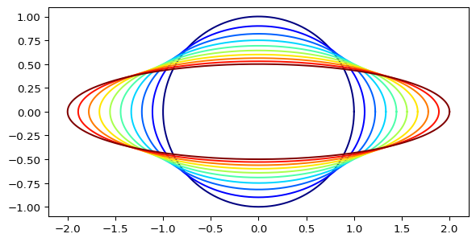
9.7 Plot Poinsot’s spiral (2nd form) (Spring 2024)
Poinsot’s spiral is defined in polar coordinates as: \[ r = \frac{1}{\cosh(n \theta)} \] plot with \(\theta\) in interval \([-10*pi, 10*pi]\) and convert from polar coordinates to (x,y)-coordinates by
\[ \begin{aligned} x &= r \cos(t)\\ y &= r \sin(t) \end{aligned} \] - Take the parameter \(n\) for example \(n = 1/3\) to have a typical curve
The output plot should look as below:
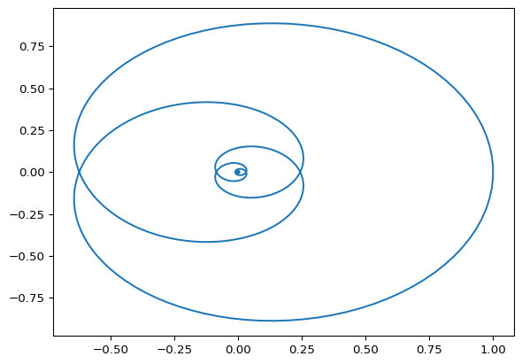
9.8 Plot a Gaussian distribution (Spring 2024)
Generate 10000 random numbers with a normal distribution and plot the histogram - First initialize the random number generator
rng = np.random.default_rng(1)- use the random number generator we created to generate 10000 random numbers from the standard normal distribution using:
xs = rng.standard_normal(size=10000)- plot a histogram using
ax.hist(x_uniform, 100)
The resulting plot should be:
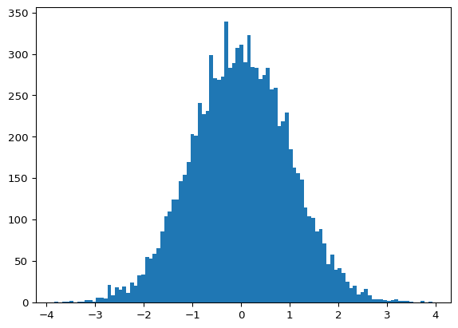
9.9 Make a scatter plot of a Gaussian distribution in 2D (Spring 2024)
- use the random number generator we created to generate 1000 random numbers for both x and y coordinates,
- Use the normal distribution
- fill in
loc(=mean), andscale(=sigma)as extra parameters:
xs = rng.normal(loc=4, scale=0.9, size=1000)
ys = rng.normal(loc=-2, scale=1.5, size=1000)- plot them in a scatter plot using:
ax.scatter(xs, ys)
The resulting output should look as below:
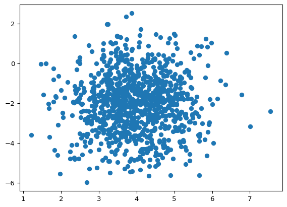
9.10 Adapt the scatter plot of previous exercise by specifying the size and color of the dots (Spring 2024)
ax.scatter(xs, ys, sz, colors, cmap=matplotlib.colormaps["jet"])where both sz and colors can be arrays of the same size as the coordinates or scalars
- for the size use for example 10
- for the colors create an array containing the distance of the coordinates to the center of the distribution
- the cmap argument allows us to set the colormap used
The resulting scatter plot should look as below:
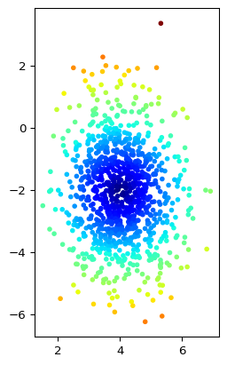
9.11 2D domains (Spring 2024)
Use Numpy’s arange() function to create two intervals containing integers with e.g. \(x \in [0,10]\) and \(y \in [0, 20]\), and make a 2D domain of them using the xx, yy = np.meshgrid(x, y) function. Plot the coordinates thus created using a scatter plot (plt.scatter(xx, yy)).
The plot should similar to the following:
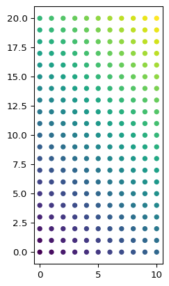
9.12 2D arrays (Spring 2024)
Use a 2D domain/interval using the np.meshgrid command such as in exercise 1, but using np.linspace() for the intervals with \(x \in [-1, 1]\) and \(y \in [-1, 1]\) at a finer grid, and plot the function for that domain:
\[
z = f(x, y) = y \sin(2 \pi\, x)
\] For the plot use the plot_surface() from Matplotlib:
fig, ax = plt.subplots(subplot_kw={"projection": "3d"})
ax.plot_surface(xx, yy, zz, cmap=cm.jet)
plt.show()The output should be similar as below:
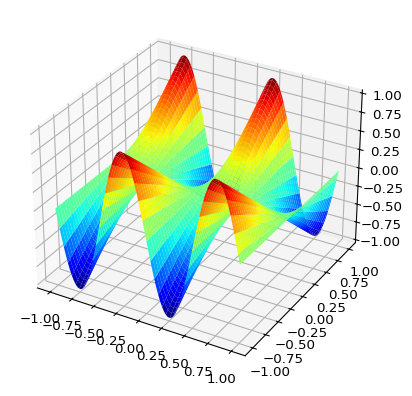